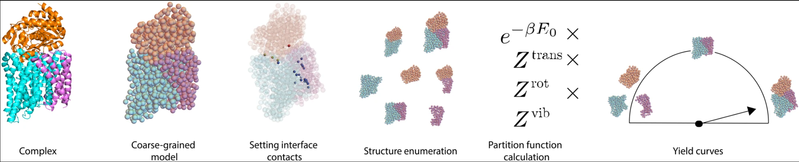

Self-assembly for non-spherical proteins
Protein molecules often bind to one another to form large complexes (or “multimers”). Examples include clathrin cages and viral capsids. Recently, synthetic proteins designed to form large complexes have been designed. Oftentimes, these designs fail, even though we can predict the binding strengths of the individual protein-protein interactions quite accurately. Our goal in this paper was to devise a theory for the self-assembly of protein multimers. Our theory is probabilistic, in the sense that we’re ultimately trying to predict (in equilibrium), given a set of protein monomers and their individual interactions, how frequently should we expect to find the full complex formed accurately?
This is a question that in some ways others have tackled previously, but our work is new in that we accounted for two features that have proven challenging to address previously: 1) the protein monomers may not be identical, and they may not be spherical; 2) the competing structures into which the proteins may assemble may have different numbers of particles. For example, the proteins may assemble into dimers, or into trimers, or they may stay as monomers. Although simple models based on the assumptions of previous work (e.g. spherical particles) can provide estimates for this multimerization behavior, those estimates can often give highly inaccurate predictions, while our theory is able to correct for some of those inaccuracies (Fig. 2).
The paper results are in some ways quite technical, but they give us a framework within which to explore generic types of self-assembly problems. For example, the work in “Uncovering the mechanism for aggregation in repeat expanded RNA reveals a reentrant transition” would not have been possible without this paper, as that work relied on being able to compare when the molecules would prefer to form multimers vs. dimers vs. monomers.